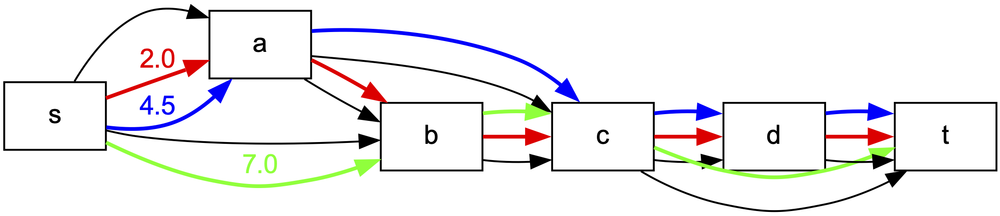

Various utils
Flowpaths implements various helper functions on graphs. They can be access with the prefix flowpaths.utils.
Graph visualization and drawing
You can create drawing as this one

using the following code:
import flowpaths as fp
import networkx as nx
# Create a simple graph
graph = nx.DiGraph()
graph.graph["id"] = "simple_graph"
graph.add_edge("s", "a", flow=6)
graph.add_edge("s", "b", flow=7)
graph.add_edge("a", "b", flow=2)
graph.add_edge("a", "c", flow=5)
graph.add_edge("b", "c", flow=9)
graph.add_edge("c", "d", flow=6)
graph.add_edge("c", "t", flow=7)
graph.add_edge("d", "t", flow=6)
# Solve the minimum path error model
mpe_model = fp.kMinPathError(graph, flow_attr="flow", k=3, weight_type=float)
mpe_model.solve()
# Draw the solution
if mpe_model.is_solved():
solution = mpe_model.get_solution()
fp.utils.draw(
G=graph,
filename="simple_graph.pdf",
flow_attr="flow",
paths=solution["paths"],
weights=solution["weights"],
draw_options={
"show_graph_edges": True,
"show_edge_weights": False,
"show_path_weights": False,
"show_path_weight_on_first_edge": True,
"pathwidth": 2,
})
This produces a file with extension .pdf storing the PDF image of the graph.
Logging
flowpaths exposes a simple logging helper via fp.utils.configure_logging. Use it to control verbosity, enable console/file logging, and set file mode.
Basic usage (console logging at INFO level):
import flowpaths as fp
fp.utils.configure_logging(
level=fp.utils.logging.INFO,
log_to_console=True,
)
Also log to a file (append mode):
fp.utils.configure_logging(
level=fp.utils.logging.DEBUG, # default is DEBUG
log_to_console=True, # show logs in terminal
log_file="flowpaths.log", # write logs to this file
file_mode="a", # "a" append (or "w" overwrite)
)
Notes:
- Levels available: fp.utils.logging.DEBUG, INFO, WARNING, ERROR, CRITICAL.
- Default level is DEBUG. If you prefer quieter output, use INFO or WARNING.
- Internally, the package logs through its own logger; configure_logging sets handlers/formatters accordingly.
API reference:
Configures logging for the flowpaths package.
Parameters:
-
level: int, optionalLogging level (e.g., fp.utils.logging.DEBUG, fp.utils.logging.INFO). Default is fp.utils.logging.DEBUG.
-
log_to_console: bool, optionalWhether to log to the console. Default is True.
-
log_file: str, optionalFile path to log to. If None, logging to a file is disabled. Default is None. If a file path is provided, the log will be written to that file. If the file already exists, it will be overwritten unless
file_modeis set to “a”. -
file_mode: str, optionalMode for the log file. “a” (append) or “w” (overwrite). Default is “w”.
Source code in flowpaths/utils/logging.py
check_flow_conservation
Check if the flow conservation property holds for the given graph.
Parameters
-
G: nx.DiGraphThe input directed acyclic graph, as networkx DiGraph.
-
flow_attr: strThe attribute name from where to get the flow values on the edges.
Returns
-
bool:
True if the flow conservation property holds, False otherwise.
Source code in flowpaths/utils/graphutils.py
draw
draw(
G: DiGraph,
filename: str,
flow_attr: str = None,
paths: list = [],
weights: list = [],
additional_starts: list = [],
additional_ends: list = [],
subpath_constraints: list = [],
draw_options: dict = {
"show_graph_edges": True,
"show_edge_weights": False,
"show_node_weights": False,
"show_path_weights": False,
"show_path_weight_on_first_edge": True,
"pathwidth": 3.0,
"style": "default",
},
)
Draw the graph with the paths and their weights highlighted.
Parameters
-
G: nx.DiGraphThe input directed acyclic graph, as networkx DiGraph.
-
filename: strThe name of the file to save the drawing. The file type is inferred from the extension. Supported extensions are ‘.bmp’, ‘.canon’, ‘.cgimage’, ‘.cmap’, ‘.cmapx’, ‘.cmapx_np’, ‘.dot’, ‘.dot_json’, ‘.eps’, ‘.exr’, ‘.fig’, ‘.gd’, ‘.gd2’, ‘.gif’, ‘.gtk’, ‘.gv’, ‘.ico’, ‘.imap’, ‘.imap_np’, ‘.ismap’, ‘.jp2’, ‘.jpe’, ‘.jpeg’, ‘.jpg’, ‘.json’, ‘.json0’, ‘.pct’, ‘.pdf’, ‘.pic’, ‘.pict’, ‘.plain’, ‘.plain-ext’, ‘.png’, ‘.pov’, ‘.ps’, ‘.ps2’, ‘.psd’, ‘.sgi’, ‘.svg’, ‘.svgz’, ‘.tga’, ‘.tif’, ‘.tiff’, ‘.tk’, ‘.vml’, ‘.vmlz’, ‘.vrml’, ‘.wbmp’, ‘.webp’, ‘.x11’, ‘.xdot’, ‘.xdot1.2’, ‘.xdot1.4’, ‘.xdot_json’, ‘.xlib’
-
flow_attr: strThe attribute name from where to get the flow values on the edges. Default is an empty string, in which case no edge weights are shown.
-
paths: listThe list of paths to highlight, as lists of nodes. Default is an empty list, in which case no path is drawn. Default is an empty list.
-
weights: listThe list of weights corresponding to the paths, of various colors. Default is an empty list, in which case no path is drawn.
-
additional_starts: listA list of additional nodes to highlight in green as starting nodes. Default is an empty list. -
additional_ends: listA list of additional nodes to highlight in red as ending nodes. Default is an empty list. -
subpath_constraints: listA list of subpaths to highlight in the graph as dashed edges, of various colors. Each subpath is a list of edges. Default is an empty list. There is no association between the subpath colors and the path colors.
-
draw_options: dictA dictionary with the following keys:
-
show_graph_edges: boolWhether to show the edges of the graph. Default is
True. -
show_edge_weights: boolWhether to show the edge weights in the graph from the
flow_attr. Default isFalse. -
show_node_weights: boolWhether to show the node weights in the graph from the
flow_attr. Default isFalse. -
show_path_weights: boolWhether to show the path weights in the graph on every edge. Default is
False. -
show_path_weight_on_first_edge: boolWhether to show the path weight on the first edge of the path. Default is
True. -
pathwidth: floatThe width of the path to be drawn. Default is
3.0. -
style: strThe style of the drawing. Available options:
default,points.
-
Source code in flowpaths/utils/graphutils.py
356 357 358 359 360 361 362 363 364 365 366 367 368 369 370 371 372 373 374 375 376 377 378 379 380 381 382 383 384 385 386 387 388 389 390 391 392 393 394 395 396 397 398 399 400 401 402 403 404 405 406 407 408 409 410 411 412 413 414 415 416 417 418 419 420 421 422 423 424 425 426 427 428 429 430 431 432 433 434 435 436 437 438 439 440 441 442 443 444 445 446 447 448 449 450 451 452 453 454 455 456 457 458 459 460 461 462 463 464 465 466 467 468 469 470 471 472 473 474 475 476 477 478 479 480 481 482 483 484 485 486 487 488 489 490 491 492 493 494 495 496 497 498 499 500 501 502 503 504 505 506 507 508 509 510 511 512 513 514 515 516 517 518 519 520 521 522 523 524 525 526 527 528 529 530 531 532 533 534 535 536 537 538 539 540 541 542 543 544 545 546 547 548 549 550 551 552 553 554 555 556 557 558 559 560 561 562 563 564 565 566 567 568 569 570 571 | |
fpid
get_subgraph_between_topological_nodes
get_subgraph_between_topological_nodes(
graph: DiGraph,
topo_order: list,
left: int,
right: int,
) -> nx.DiGraph
Create a subgraph with the nodes between left and right in the topological order, including the edges between them, but also the edges from these nodes that are incident to nodes outside this range.
Source code in flowpaths/utils/graphutils.py
max_bottleneck_path
Computes the maximum bottleneck path in a directed graph.
Parameters
-
G: nx.DiGraphA directed graph where each edge has a flow attribute.
-
flow_attr: strThe flow attribute from where to get the flow values.
Returns
-
tuple: A tuple containing:
- The value of the maximum bottleneck.
- The path corresponding to the maximum bottleneck (list of nodes). If no s-t flow exists in the network, returns (None, None).
Source code in flowpaths/utils/graphutils.py
max_occurrence
Check what is the maximum number of edges of seq that appear in some path in the list paths_in_DAG.
This assumes paths_in_DAG are paths in a directed acyclic graph.
Parameters
- seq (list): The sequence of edges to check.
- paths (list): The list of paths to check against, as lists of nodes.
Returns
- int: the largest number of seq edges that appear in some path in paths_in_DAG
Source code in flowpaths/utils/graphutils.py
read_graph
Parse a single graph block from a list of lines.
Accepts one or more header lines at the beginning (each prefixed by ‘#’), followed by a line containing the number of vertices (n), then any number of edge lines of the form: “u v w” (whitespace-separated).
Subpath constraint lines
Lines starting with “#S” define a (directed) subpath constraint as a sequence of nodes: “#S n1 n2 n3 …”. For each such line we build the list of consecutive edge tuples [(n1,n2), (n2,n3), …] and append this edge-list (the subpath) to G.graph[“constraints”]. Duplicate filtering is applied on the whole node sequence: if an identical sequence of nodes has already appeared in a previous “#S” line, the entire subpath line is ignored (its edges are not added again). Different subpaths may
share edges; they are kept as separate entries. After all graph edges are parsed, every constraint edge is validated to ensure it exists in the graph; a missing edge raises ValueError.
Example block
graph number = 1 name = foo
any other header line
S a b c d (adds subpath [(a,b),(b,c),(c,d)])
S b c e (adds subpath [(b,c),(c,e)])
S a b c d (ignored: exact node sequence already seen)
5 a b 1.0 b c 2.5 c d 3.0 c e 4.0
Source code in flowpaths/utils/graphutils.py
20 21 22 23 24 25 26 27 28 29 30 31 32 33 34 35 36 37 38 39 40 41 42 43 44 45 46 47 48 49 50 51 52 53 54 55 56 57 58 59 60 61 62 63 64 65 66 67 68 69 70 71 72 73 74 75 76 77 78 79 80 81 82 83 84 85 86 87 88 89 90 91 92 93 94 95 96 97 98 99 100 101 102 103 104 105 106 107 108 109 110 111 112 113 114 115 116 117 118 119 120 121 122 123 124 125 126 127 128 129 130 131 132 133 134 135 136 137 | |
read_graphs
Read one or more graphs from a file.
Supports graphs whose header consists of one or multiple consecutive lines prefixed by ‘#’. Each graph block is: - one or more header lines starting with ‘#’ - one line with the number of vertices (n) - zero or more edge lines “u v w”
Graphs are delimited by the start of the next header (a line starting with ‘#’) or the end of file.